SISTEMAS OPERATIVOS · curso 2
1. Introduccion
Escrito por Adrián Quiroga Linares.
Nota
Quizás hay errores de formato porque convertí el pdf original a markdown con un script, si ves algo raro consulta el pdf SOIFINAL.pdf
Introducción - Empieza la Aventura
Una computadora moderna es un sistema complejo, y el trabajo de administrar todos sus componentes y utilizarlos de manera óptima es una tarea muy desafiante. Por esta razón, las computadoras están equipadas con una capa de software llamada sistema operativo, cuyo trabajo es proporcionar a los programas de usuario un modelo de computadora mejor, más simple y pulcro, así como encargarse de la administración de todos sus recursos, entre ellos, el hardware.
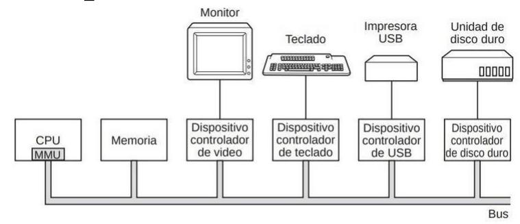
Algunos de los sistemas operativos más usados son Windows, Linux o Mac OS. El programa con el que los usuarios generalmente interactúan se denomina Shell, cuando está basado en texto, y GUI (Graphical User Interface) cuando utiliza elementos gráficos o iconos. Aunque no forma parte del sistema operativo, este lo utiliza para llevar a cabo su trabajo. Es el nivel más bajo del software en modo usuario y permite la ejecución de otros programas.
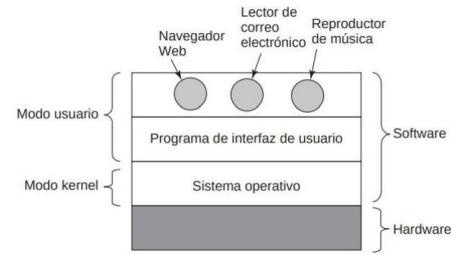
1.1. ¿Qué es un sistema operativo?
Los sistemas operativos realizan dos funciones básicas que no están relacionadas: proporcionar a los programadores de aplicaciones un conjunto abstracto de recursos simples, en vez de los complejos conjuntos de hardware; y administrar estos recursos de hardware.
Los verdaderos clientes del sistema operativo son los programas de aplicación (a través de los programadores de aplicaciones). Son los que tratan directamente con el sistema operativo y sus abstracciones. En contraste, los usuarios finales tienen que lidiar con las abstracciones que proporciona la interfaz de usuario, ya sea un shell de línea de comandos o una interfaz gráfica.
Por otra parte, el sistema operativo también está presente para administrar todas las piezas de un sistema complejo. Las computadoras modernas constan de procesadores, memorias, temporizadores, discos, ratones, interfaces de red, impresoras y una amplia variedad de otros dispositivos. El trabajo del sistema operativo es proporcionar una asignación ordenada y controlada de los procesadores, memorias y dispositivos de E/S, entre los diversos programas que compiten por estos recursos.
Los sistemas operativos modernos permiten la ejecución simultánea de varios programas. Su tarea es llevar un registro de que programa está utilizando qué recursos, de otorgar las peticiones de recursos, de contabilizar su uso y de mediar las peticiones en conflicto provenientes de distintos programas y usuarios. Esta administración de recursos incluye el multiplexaje (compartir) de recursos en dos formas distintas: en el tiempo (p.e. una sola CPU) y en el espacio (p.e. memoria principal).
La mayoría de las computadoras tienen dos modos de operación: modo kernel y modo usuario. El sistema operativo esla pieza fundamental delsoftware y se ejecuta en modo kernel. En este modo, elsistema operativo tiene acceso completo a todo el hardware y puede ejecutar cualquier instrucción que la máquina sea capaz de ejecutar. El resto del software se ejecuta en modo usuario, en el cual sólo un subconjunto de las instrucciones máquina es permitido. En particular, las instrucciones que afectan el control de la máquina o que se encargan de la E/S (entrada/salida) están prohibidas para los programas en modo usuario.
Para obtener servicios del sistema operativo, un programa usuario debe lanzar una llamada al sistema (system call), la cual se atrapa en el kernel e invoca al sistema operativo. La instrucción TRAP cambia del modo usuario al modo kernel e inicia el sistema operativo. Las computadoras tienen otros traps aparte de la instrucción para ejecutar una llamada al sistema. La mayoría de los demás traps son producidos por el hardware para advertir acerca de una situación excepcional.
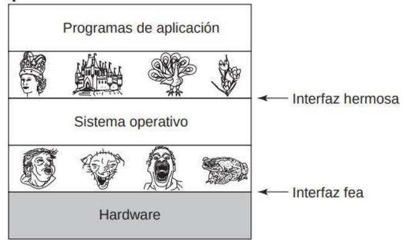
FIGURA 1.3. Los sistemas operativos ocultan el hardware feo con abstracciones hermosas.
1.2. Revisión del hardware
Un sistema operativo está íntimamente relacionado con el hardware de la computadora sobre la que se ejecuta. Para trabajar debe conocer muy bien el hardware, por lo menos en lo que respecta a cómo aparece para el programador.
1.2.1. El procesador
El "cerebro" de la computadora es la CPU, que obtiene las instrucciones de la memoria y las ejecuta. El ciclo básico de toda CPU es obtener la primera instrucción de memoria, decodificarla para determinar su tipo y operandos, ejecutarla y después obtener, decodificar y ejecutar las instrucciones subsiguientes. El ciclo se repite hasta que el programa termina. De esta forma se ejecutan los programas.
Cada CPU tiene un conjunto específico de instrucciones que puede ejecutar. Como el acceso a la memoria para obtener una instrucción o palabra de datos requiere mucho más tiempo que ejecutar una instrucción, todas las CPU contienen ciertos registros en su interior para contener las variables clave y los resultados temporales. Debido a esto, el conjunto de instrucciones generalmente contiene instrucciones para cargar una palabra de memoria en un registro y almacenar una palabra de un registro en la memoria. El sistema operativo debe de estar al tanto de todos los registros, ya que cada vez que se detiene un programa en ejecución, debe guardar todos los registros para poder restaurarlos cuando el programa continúe su ejecución.
Además de los registros generales utilizados para contener variables y resultados temporales, la mayoría de las computadoras tienen varios registros especiales que están visibles para el programador. Uno de ellos es el contador de programa (program counter), el cual contiene la dirección de memoria de la siguiente instrucción a obtener. Una vez que se obtiene esa instrucción, el contador de programa se actualiza para apuntar a la siguiente.
Otro registro es el apuntador de pila (stack pointer), el cual apunta a la parte superior de la pila (stack) actual en la memoria. La pila contiene un conjunto de valores por cada procedimiento al que se ha entrado pero del que todavía no se ha salido. El conjunto de valores en la pila por procedimiento contiene los parámetros de entrada, las variables locales y las variables temporales que no se mantienen en los registros.
Otro de los registros es PSW (Program Status Word; Palabra de estado del programa). Este registro contiene los bits de código de condición, que se asignan cada vez que se ejecutan las instrucciones de comparación, la prioridad de la CPU, el modo (usuario o kernel) y varios otros bits de control. Los programas de usuario pueden leer normalmente todo el PSW pero por lo general sólo pueden escribir en algunos de sus campos. El PSW juega un papel importante en las llamadas al sistema y en las operaciones de E/S.
Muchas CPUs modernas cuentan con medios para ejecutar más de una instrucción al mismo tiempo. Por ejemplo, una CPU podría tener unidades separadas de obtención, decodificación y ejecución. A dicha organización se le conoce como canalización (pipeline); la figura 1.4.(a) ilustra una canalización de tres etapas.
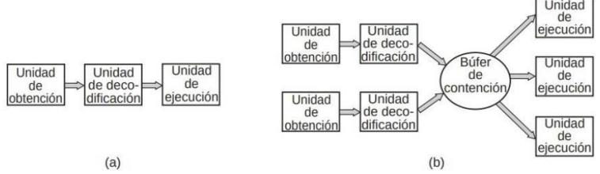
Aún más avanzada que el diseño de una canalización es la CPU superescalar, que se muestra en la figura 1.4.(b). En este diseño hay varias unidades de ejecución; por ejemplo, una para la aritmética de enteros, una para la aritmética de punto flotante y otra para las operaciones Booleanas.
A medida que incrementa el número de transistores en los chips surge el problema de qué hacer con todos ellos. Una solución son las arquitecturas superescalares, con múltiples unidades funcionales, pero se puede hacer todavía más. Además de colocar cachés más grandes en el chip de la CPU, ya que en cierto momento se llega al punto de rendimiento decreciente, se multiplican no sólo las unidades funcionales, sino también parte de la lógica de control. Algunos chips de CPU tienen esta propiedad, conocida como multihilamiento.
(multithreading) o hiperhilamiento (hyperthreading). Lo que hace es permitir que la CPU contenga el estado de dos hilos de ejecución (threads) distintos y luego alterne entre uno y otro con una escala de tiempo en nanosegundos (un hilo de ejecución es algo así como un proceso ligero, que a su vez es un programa en ejecución).
Mas allá del multihilamiento, tenemos chips de CPU con dos, cuatro o más procesadores completos, o núcleos (cores) en su interior. Los chips de multinúcleo (multicore) de la figura 1.5. contienen efectivamente cuatro minichips en su interior, cada uno con su propia CPU independiente. Para hacer uso de dicho chip multinúcleo se requiere en definitiva un sistema operativo multiprocesador.
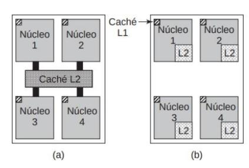
1.2.2. La memoria
El segundo componente importante en cualquier computadora es la memoria. En teoría, una memoria debe ser en extremo rápida (másrápida que la velocidad de ejecución de una instrucción, de manera que la memoria no detenga a la CPU), de gran tamaño y muy económica.
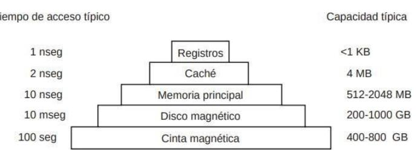
Ninguna tecnología en la actualidad cumple con todos estos objetivos, por lo que se adopta una solución distinta. El sistema de memoria está construido como una jerarquía de capas, como se muestra en la figura 1.6. Las capas superiores tienen mayor velocidad, menor capacidad y mayor costo por bit que las capas inferiores, a menudo por factores de mil millones o más.
La capa superior consiste en los registros internos de la CPU, la capacidad de almacenamiento de estos registros suele ser de 64x64 bits.
El siguiente nivel es la memoria caché, que el hardware controla de manera parcial. La memoria principal se divide en líneas de caché, que por lo general son de 64 bytes, con direcciones de 0 a 63 en la línea de caché 0, direcciones de 64 a 127 en la línea de caché 1 y así sucesivamente. Las líneas de caché que se utilizan con más frecuencia se mantienen en una caché de alta velocidad, ubicada dentro o muy cerca de la CPU. Cuando el programa necesita leer una palabra de memoria, el hardware de la caché comprueba si la línea que se requiere se encuentra en la caché. Si es así (a lo cual se le conoce como acierto de caché), la petición de la caché se cumple y no se envía una petición de memoria a través del bus hacia la memoria principal. Los aciertos de caché por lo general requieren un tiempo aproximado de dos ciclos de reloj. Los fallos de caché tienen que ir a memoria, con un castigo considerable de tiempo. La memoria caché está limitada en tamaño debido a su alto costo.
La memoria principal viene a continuación en la jerarquía de la figura 1-6. Es el "caballo de batalla" del sistema de memoria. Por lo general a la memoria principal se le conoce como RAM (Random Access Memory, Memoria de Acceso Aleatorio). Todas las peticiones de la CPU que no se puedan satisfacer desde la caché pasan a la memoria principal.
Además de la memoria principal, muchas computadoras tienen una pequeña cantidad de memoria de acceso aleatorio no volátil. A diferencia de la RAM, la memoria no volátil no pierde su contenido cuando se desconecta la energía. La ROM (Read Only Memory, Memoria de sólo lectura) se programa en la fábrica y no puede modificarse después. Es rápida y económica. En algunas computadoras, el cargador de arranque (bootstrap loader) que se utiliza para iniciar la computadora está contenido en la ROM.
1.2.3. La memoria secundaria: disco
El siguiente lugar en la jerarquía corresponde al disco magnético (disco duro). El almacenamiento en disco es dos órdenes de magnitud más económico que la RAM por cada bit, y a menudo es dos órdenes de magnitud más grande en tamaño también. El único problema es que el tiempo para acceder en forma aleatoria a los datos en ella es de cerca de tres órdenes de magnitud más lento. Esta baja velocidad
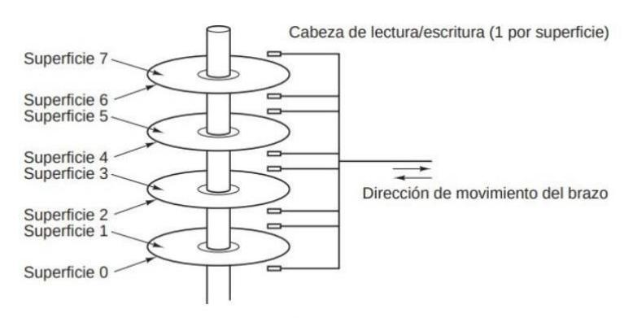
se debe al hecho de que un disco es un dispositivo mecánico, como se muestra en la figura 1.7.
Un disco consiste en uno o más platos que giran a 5400, 7200 o 10,800 rpm. Un brazo mecánico, con un punto de giro colocado en una esquina, se mueve sobre los platos de manera similar al brazo de la aguja en un viejo tocadiscos. La información se escribe en el disco en una serie de círculos concéntricos. En cualquier posición dada del brazo, cada una de las cabezas puede leer una región anular conocida como pista (track). En conjunto, todas las pistas para una posición dada del brazo forman un cilindro (cylinder).
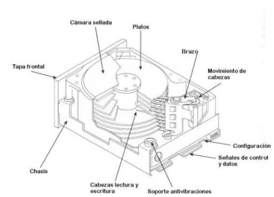
Además el disco introduce el concepto de memoria virtual, que se puede entender como usar el disco como una extension
de la RAM. La memoria virtual nos va a permitir la ejecución de programas más grandes que la memoria física al colocarlos en el disco y usar la RAM como una especie de caché para las partes que más se usan. Este esquema requiere la reasignación de direcciones de memoria al instante, para convertir la dirección generada por el programa a la RAM. Esta traducción se realiza en el procesador mediante la MMU.
La presencia de la caché y la MMU pueden tener un gran impacto en el rendimiento. En un sistema de multiprogramación, al cambiar de un programa a otro (lo que se conoce comúnmente como cambio de contexto o context switch), puede ser necesario vaciar todos los bloques modificados de la caché y modificar los registros de asignación en la MMU. Ambas operaciones son costosas y los programadores se esfuerzan bastante por evitarlas. Más adelante veremos algunas de las consecuencias de sus tácticas.
1.2.4. Los dispositivos de E/S
Los dispositivos de E/S también interactúan mucho con el sistema operativo. Como vimos en la figura 1.1., los dispositivos de E/S generalmente constan de dos partes: un dispositivo controlador y el dispositivo en sí. El dispositivo controlador es un chip o conjunto de chips que controla físicamente el dispositivo. Por ejemplo, acepta los comandos del sistema operativo para leer datos del dispositivo y los lleva a cabo. La otra pieza es el dispositivo en sí.
Como cada tipo de dispositivo controlador es distinto, se requiere software diferente para controlar cada uno de ellos. El software que se comunica con un dispositivo controlador, que le proporciona comandos y acepta respuestas, se conoce como driver (controlador). Cada fabricante de dispositivos controladores tiene que suministrar un driver específico para cada sistema operativo en que pueda funcionar.
Para utilizar el driver, se tiene que colocar en el sistema operativo de manera que pueda ejecutarse en modo kernel. Hay varias formas en que el driver se pueda colocar en el kernel, pero nos vamos a centrar en la que lo carga de forma dinámica. Esta forma consiste en que el sistema operativo acepte nuevos drivers mientras los ejecuta e instala al instante, sin necesidad de reiniciar el sistema. Los dispositivos conectables en caliente (hot- pluggable), como los dispositivos USB e IEEE 1394, siempre necesitan drivers que se cargan en forma dinámica.
Todo dispositivo controlador tiene un número pequeño de registros que sirven para comunicarse con él. Por ejemplo, un dispositivo controlador de disco con las mínimas características podría tener registros para especificar la dirección de disco, dirección de memoria, número de sectores e instrucción (lectura o escritura). Para activar el dispositivo controlador, el driver recibe un comando del sistema operativo y después lo traduce en los valores apropiados para escribirlos en los registros del dispositivo controlador. La colección de todos los registros del dispositivo controlador forma el espacio de puertos de E/S.
En ciertas computadoras, los registros de dispositivo tienen una correspondencia con el espacio de direcciones del sistema operativo (las direcciones que puede utilizar), de modo que se puedan leer y escribir en ellas como si fuera en palabras de memoria ordinarias. En dichas computadoras no se requieren instrucciones de E/S especiales. En otras computadoras, los registros de dispositivo se colocan en un espacio de puertos de E/S
especial, donde cada registro tiene una dirección de puerto. En estas máquinas hay instrucciones IN y OUT especiales disponibles en modo kernel que permiten a los drivers leer y escribir en los registros. El primer esquema elimina la necesidad de instrucciones de E/S especiales, pero utiliza parte del espacio de direcciones. El segundo esquema no utiliza espacio de direcciones, pero requiere instrucciones especiales.
1.2.5. El Bus
Consiste en un conjunto de cables eléctricos que conecta los distintos dispositivos de la computadora. Antes había un único bus que conectaba todos los dispositivos, pero eso acabo siendo inmanejable. Ahora hay 8 buses (caché, local, memoria, PCI, SCSI, USB, IDE e ISA) cada uno con su propia velocidad de transferencia y función distintas.
1.2.6. El arranque de la computadora
En la placa base hay un programa conocido como BIOS (Basic
Input Output System, Sistema básico de entrada y salida) del sistema. El BIOS contiene software de E/S de bajo nivel, incluyendo procedimientos para leer el teclado, escribir en la pantalla y realizar operaciones de E/S de disco, entre otras cosas. Hoy en día está contenido en una RAM tipo flash que es no volátil pero el sistema operativo puede actualizarla cuando se encuentran errores en el BIOS.
Al encender la computadora, el BIOS ejecuta pruebas de hardware, como verificar la cantidad de RAM instalada y la respuesta de dispositivos básicos como el teclado. Luego, explora los buses ISA y PCI para detectar dispositivos conectados, tanto los heredados como los de tipo plug and play, asignando configuraciones cuando sea necesario.
El BIOS consulta una lista en la memoria CMOS para determinar el dispositivo de arranque. Los dispositivos probados en orden suelen ser el disco flexible, CD-ROM y el Disco Duro.
Se carga el Sistema Operativo, el BIOS lee el primer sector del dispositivo de arranque y lo coloca en memoria. Este sector contiene un programa que examina la tabla de particiones para determinar qué partición está activa. Se lee y ejecuta el cargador de arranque secundario de esa partición, que carga el sistema operativo desde la partición activa.
El sistema operativo consulta al BIOS para obtener información de configuración y verifica si los drivers de los dispositivos están presentes. Si faltan, pide al usuario que inserte un CD-ROM con los drivers correspondientes. Una vez que los drivers están cargados en el kernel, el sistema operativo inicializa las tablas necesarias, crea procesos de segundo plano (llamados demonios) y arranca un programa de inicio de sesión o GUI. #Sistemas operativos de servidores
1.2.7. Tipos de Sistemas Operativos
Sistemas operativos de mainframe
Están orientados hacia el procesamiento de muchos trabajos, sobre todo de muchas operaciones de E/S, a la vez. Se usan en servidores web de alto rendimiento, como en UNIX.
Sistemas operativos de servidores
Dan servicio a varios usuarios a la vez y les permiten compartir los recursos de hardware y software. Tenemos Linux, Windows, Solaris.
Sistemas operativos de multiprocesadores
Sistemas de varias CPUs. Linux, Windows.
Sistemas operativos de computadoras personales (PC)
Su trabajo es proporcionar un buen soporte a un sólo usuario. Linux, Windows y MacOS.
Sistemas operativos de computadoras de bolsillo (PDA)
Proporcionan servicios de telefonía, fotografía digital, etc. Android, IOS, Windows Phone.
Sistemas operativos empotrados (embedded)
Tienen un conjunto cerrado de aplicaciones y no se pueden instalar nuevas. Se usan en microondas, reproductores de música, etc. QNX, VxWorks.
SISTEMAS OPERATIVOS EN TIEMPO REAL
Su parámetro clave es el tiempo. Se usan en fábricas.
1.3 Conceptos Básicos de los Sistemas Operativos
1.3.1. Procesos
Un concepto clave en todos los sistemas operativos es el proceso. Un proceso es en esencia un programa en ejecución. Cada proceso tiene asociado un espacio de direcciones, una lista de ubicaciones de memoria que va desde algún mínimo (generalmente 0) hasta cierto valor máximo, donde el proceso puede leer y escribir información. El espacio de direcciones contiene el programa ejecutable, los datos del programa y su pila. También hay asociado a cada proceso un conjunto de recursos, que comúnmente incluye registros (el contador de programa CP y el apuntador de pila SP, entre ellos), una lista de archivos abiertos, alarmas pendientes, listas de procesos relacionados y toda la demás información necesaria para ejecutar el programa. En esencia, un proceso es un recipiente que guarda toda la información necesaria para ejecutar un programa.
Los procesos tienen su memoria dividida en 3 segmentos (lo de llamar a esto segmento es muy confuso y cuanto más sepáis sobre memoria más os va a confundir esto, sin embargo, pensad que en sistemas con segmentación esto es cierto, pero en sistemas con paginación se pueden interpretar como conjuntos de páginas independientes, si es la primera vez que lees esto no te preocupes, haz como que no lo has leído):
- Segmento de texto (código del programa).
- Segmento de datos (variables).
- Segmento de pila.
Para darse una buena idea de lo que es un proceso, podemos pensar en un sistema de multiprogramación. Cuando tenemos varios procesos activos, cada cierto tiempo el sistema operativo decide detener la ejecución de un proceso y empezar a ejecutar otro; por ejemplo, debido a que el primero ha utilizado más tiempo del que le correspondía de la CPU en el último segundo. Por lo que la CPU conmuta entre procesos rápidamente, esto se conoce como un cambio de contexto.
Cuando un proceso se suspende temporalmente, toda la información relevante (como los archivos abiertos y su posición) se guarda para poder reiniciar el proceso en el mismo estado cuando vuelva a ejecutarse. Esta información se almacena en la tabla de procesos del sistema operativo, la cual es un array (o lista enlazada) de estructuras, una para cada proceso que se encuentre actualmente en existencia. Esta tabla es global para todo el sistema y está cargada en la RAM.
La tabla de procesos es esencial en un sistema de tiempo compartido porque:
- Almacena el estado de los procesos: Contiene información sobre cada proceso, como su ID, estado (ejecutando, listo, bloqueado), registros, contador de programa, y recursos asignados.
- Facilita la multitarea: Permite al sistema operativo gestionar varios procesos a la vez, realizando cambios de contexto de manera eficiente.
- Rastrea recursos: Ayuda a garantizar que los recursos asignados a cada proceso (como memoria y archivos abiertos) estén correctamente administrados.
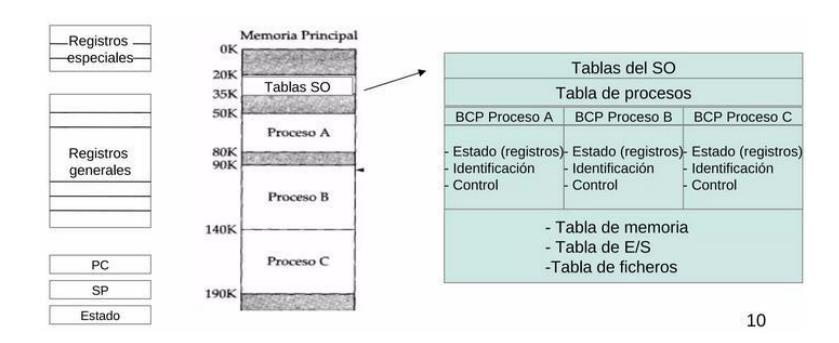
En un sistema de multiprogramación, varios procesos pueden estar activos simultáneamente. El sistema operativo se encarga de interrumpir un proceso y asignar tiempo de CPU a otro, gestionando el intercambio entre procesos mediante suspensiones temporales.
Las llamadas al sistema de administración de procesos clave son las que se encargan de la creación y la terminación de los procesos. Considere un ejemplo común. Un proceso llamado intérprete de comandos o shell lee comandos de una terminal. El usuario acaba de escribir un comando, solicitando la compilación de un programa. El shell debe entonces crear un proceso para ejecutar el compilador. Cuando ese proceso ha terminado la compilación, ejecuta una llamada al sistema para terminarse a sí mismo.
Si un proceso puede crear uno o más procesos aparte (conocidos como procesos hijos) y estos procesos a su vez pueden crear procesos hijos, llegamos rápidamente la estructura de árbol de procesos de la figura 1.9. Los procesos relacionados que cooperan para realizar un cierto trabajo a menudo necesitan comunicarse entre sí y sincronizar sus actividades. A esta comunicación se le conoce como comunicación entre procesos mediante llamadas.
En algunas ocasiones se tiene la necesidad de transmitir información a un proceso en ejecución que no está esperando esta información. Cuando ha transcurrido el número especificado de segundos, el sistema operativo envía una señal de alarma al proceso. La señal provoca que el proceso suspenda en forma temporal lo que esté haciendo, almacene
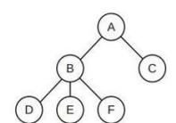
sus registros en la pila y empiece a ejecutar un procedimiento manejador de señales especial, por ejemplo, para retransmitir un mensaje que se considera perdido. Cuando termina el manejador de señales, el proceso en ejecución se reinicia en el estado en el que se encontraba justo antes de la señal. Las señales son la analogía en software de las interrupciones de hardware y se pueden generar mediante una variedad de causas además de la expiración de los temporizadores.
Cada persona autorizada para utilizar un sistema recibe una UID (User Identification, Identificación de usuario) que el administrador del sistema le asigna. Cada proceso iniciado tiene el UID de la persona que lo inició. Un proceso hijo tiene el mismo UID que su padre. Los usuarios pueden ser miembros de grupos, cada uno de los cuales tiene una GID (Group Identification, Identificación de grupo). Una UID conocida como superusuario (superuser en UNIX) tiene poder especial y puede violar muchas de las reglas de protección.
1.3.2 Espacio de direcciones
Cada computadora tiene cierta memoria principal que utiliza para mantener los programas en ejecución, por lo que se deduce que los espacios de direcciones de los programas se mantienen en esta memoria principal. En un sistema operativo muy simple sólo hay un programa a la vez en la memoria. Para ejecutar un segundo programa se tiene que quitar el primero y colocar el segundo en la memoria.
Los sistemas operativos más sofisticados permiten colocar varios programas en memoria al mismo tiempo. Para evitar que interfieran unos con otros (y con el sistema operativo), se necesita cierto mecanismo de protección. Aunque este mecanismo tiene que estar en el hardware, es controlado por el sistema operativo.
El problema surge cuando tenemos varios procesos que superan el tamaño de la memoria física. Para manejar esta situación, los sistemas operativos modernos utilizan una técnica llamada memoria virtual. Esta técnica permite que un proceso tenga un espacio de direcciones más grande que la memoria física real disponible, dividiendo el espacio de direcciones en partes que se mantienen en la memoria principal y en el disco duro. El sistema operativo gestiona el movimiento de estos fragmentos entre la memoria principal y el disco según sea necesario.
1.3.3 Sistema de archivos
Otro concepto clave de casi todos los sistemas operativos es el sistema de archivos. Sin duda se requieren las llamadas al sistema para crear los archivos, eliminarlos, leer y escribir en ellos. Antes de poder leer un archivo, localizarse en el disco para abrirse y una vez que se ha leído información del archivo debe cerrarse, por lo que se proporcionan llamadas para hacer estas cosas.
Un directorio es una forma de agrupar archivos, y puede contener tanto archivos como otros directorios, esto da lugar a una estructura de árbol. Se necesitan llamadas al sistema para crear y eliminar directorios. También se proporcionan llamadas para poner un archivo existente en un directorio y para eliminar un archivo de un directorio. Las entradas de directorio pueden ser archivos u otros directorios. Este modelo también da surgimiento a una jerarquía (el sistema de archivos) como se muestra en la figura 1.10.
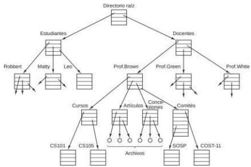
Para especificar cada archivo dentro de la jerarquía de directorio, se proporciona su nombre de ruta de la parte superior de la jerarquía de directorios, el directorio raíz. Dichos nombres de ruta absolutos consisten de la lista de directorios que deben recorrerse desde el directorio raíz para llegar al archivo, y se utilizan barras diagonales para separar los componentes.
En cada instante, cada proceso tiene un directorio de trabajo actual, en el que se buscan los nombres de ruta que no empiecen con una barra diagonal. Como ejemplo, en la figura 1.10. si /Docentes/Prof.Brown fuera el directorio de trabajo, entonces el uso del nombre de ruta Cursos/CS101 produciría el mismo archivo que el nombre de ruta absoluto antes proporcionado. Los procesos pueden modificar su directorio de trabajo mediante
una llamada al sistema que especifique el nuevo
directorio de trabajo.
Otro concepto importante en UNIX es el sistema de archivos montado. Consiste en incluir otros sistemas de archivos externos a la jerarquía del sistema de archivos raíz del disco duro. En principio, no se puede acceder a los archivos de los sistemas de almacenamiento externos pues no existe manera de especificar sus nombres de ruta.
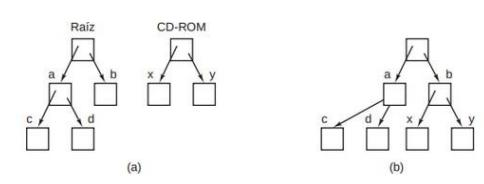
La llamada al sistema mount permite adjuntar el sistema de archivos externo al sistema de archivos raíz en donde el programa desea que esté.
1.3.4 Protección
Las computadoras contienen grandes cantidades de información que los usuarios comúnmente desean proteger y mantener de manera confidencial. Es responsabilidad del sistema operativo administrar la seguridad del sistema de manera que los archivos, por ejemplo, sólo sean accesibles para los usuarios autorizados.
Como un ejemplo simple, sólo para tener una idea de cómo puede funcionar la seguridad, considere el sistema operativo UNIX. Los archivos en UNIX están protegidos debido a que cada uno recibe un código de protección binario de 9 bits. El código de protección consiste en tres campos de 3 bits, uno para el propietario, uno para los demás miembros del grupo del propietario (el administrador del sistema divide a los usuarios en grupos) y uno para todos los demás. Cada campo tiene un bit para el acceso de lectura, un bit para el acceso de escritura y un bit para el acceso de ejecución.
Estos 3 bits se conocen como los bits rwx. Por ejemplo, el código de protección rwxrx--x indica que el propietario puede leer (r), escribir (w) o ejecutar (x) el archivo, otros miembros del grupo pueden leer o ejecutar (pero no escribir) el archivo y todos los demás pueden ejecutarlo (pero no leer ni escribir). Para un directorio, x indica el permiso de búsqueda. Un guion corto indica que no se tiene el permiso correspondiente.
1.3.5 El intérprete de comandos (Shell)
El shell es el intérprete de comandos de UNIX. Aunque no forma parte del sistema operativo, utiliza con frecuencia muchas características del mismo y, por ende, sirve como un buen ejemplo de la forma en que se pueden utilizar las llamadas al sistema. También es la interfaz principal entre un usuario sentado en su terminal y el sistema operativo, a menos que el usuario esté usando una interfaz gráfica de usuario. Existen muchos shells, incluyendo sh, csh, ksh y bash.
Cuando cualquier usuario inicia sesión, se inicia un shell. El shell tiene la terminal como entrada y salida estándar. Empieza por escribir el indicador de comandos (prompt), un carácter tal como un signo de dólar, que indica al usuario que el shell está esperando aceptar un comando. El usuario puede especificar que la salida estándar sea redirigida a un archivo, y la salida de un programa se puede utilizar como entrada para otro, si se conectan mediante un canal.
En el shell además podemos realizar las siguientes acciones:
- Redireccionamiento: se puede redirigir la entrada y salida estándar con los operandos < y>, respectivamente. Date > archivo
- Canalización: la salida de un programa se puede usar como entrada para otro operando | . cat archivo1 archivo2 archivo3 |sort >/dev/lp
- Comodines: el shell lo sustituye por todas las posibles combinaciones de caracteres provenientes del directorio en cuestión.
1.4 Llamadas al Sistema
Si un programa de usuario en modo usuario necesita un servicio del sistema, como leer del disco ejecuta un trap para pasar el SO. Después este averigua que quiere el proceso llamador, lleva a cabo la llamada al sistema y devuelve el control a la siguiente instrucción. La verdadera mecánica relacioneada con la acción de emitir una lllamada al sistema es muy dependiente de la máquina (y a menudo se expresa en ensamblador), se proporciona al programado una biblioteca de procedimientos para poder realizar llamadas al sistema desde programas en C y otros lenguajes.
Una llamada al sistema (system call) es el mecanismo que permite a los programas en modo usuario solicitar servicios o recursos del sistema operativo en modo kernel.
Ejemplo:
cuenta = read(fd, bufer, nbytes);
La llamada al sistema (y el procedimiento de biblioteca) devuelve el número de bytes que se leen en cuenta. Si la llamada al sistema no se puede llevar a cabo, ya sea debido a un parámetro inválido o a un error del disco, cuenta se establece a -1 y el número de error se coloca en una variable global llamada errno.
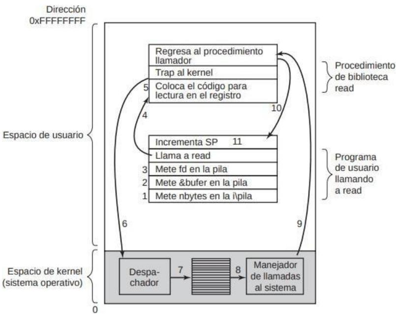
FIGURA 1.12. Los 11 pasos para realizar la llamada al sistema read(fd, bufer, nbytes).
- El programa de usuario llamador introduce los datos en la pila
- Se llama al procedimiento read de la biblioteca correspondiente (que seguramente esté en ensamblador).
- El código de la librería coloca en un registro el número de llamada correspondiente para que el SO pueda determinar qué hacer con ella.
- El procedimiento de biblioteca ejecuta un trap para cambiar el modod usario a kernel y empezar la ejecución en una dirección fija dentro del núcleo.
LA INSTRUCCIÓN DE TRAP SIEMPRE SALTA A UNA DIRECCIÓN FIJA.
- El en el kernel, el despachador analiza el número de la llamada y a través de una tabla de apuntadores a manejadores de llamadas indexados en base al número de llamada, se pasa el control al manejador de llamada correspondiente
- Se ejecuta el manejador de esa llamada.
- Se devuelve el control (o no) al procedimiento de biblioteca, en la instrucción de después del trap.
- Después este procedimiento de biblioteca vuelve al programa de usuario.
- El programa de usuario limpia la pila.
1.5 Llamadas al sistema para la administración de procesos
| Llamada | Descripción | |
|---|---|---|
| pid = fork() | Crea un proceso hijo, idéntico al padre | |
| pid = waitpid(pid, &statloc, opciones) | Espera a que un hijo termine | |
| s = execve(nombre, argv, entornp) | Reemplaza la imagen del núcleo de un proceso | |
| exit(estado) | Termina la ejecución de un proceso y devuelve el estado |
| Descripción | |
|---|---|
| Abre un archivo para lectura, escritura o ambas | |
| Cierra un archivo abierto | |
| Lee datos de un archivo y los coloca en un búfer | |
| Escribe datos de un búfer a un archivo | |
| Desplaza el apuntador del archivo | |
| Obtiene la información de estado de un archivo | |
| Llamada | Descripción | |
|---|---|---|
| s = mkdir(nombre, modo) | Crea un nuevo directorio | |
| s = rmdir(nombre) | Elimina un directorio vacío | |
| s = link(nombre1, nombre2) | Crea una nueva entrada llamada nombre2, que apunta a nombre1 | |
| s = unlink(nombre) | Elimina una entrada de directorio | |
| s = mount(especial, nombre, bandera) | Monta un sistema de archivos | |
| s = umount(especial) | Desmonta un sistema de archivos |
FIGURA 1.13. Algunas de las principales llamadas al sistema POSIX. El código de
| Llamada | Descripción Cambia el directorio de trabajo | |
|---|---|---|
| s = chdir(nombredir) | ||
| s = chmod(nombre, modo) | Cambia los bits de protección de un archivo | |
| s = kill(pid, senial) | Envía una señal a un proceso | |
| segundos = tiempo(&segundos) | Obtiene el tiempo transcurrido desde Ene 1, 1970 |
retorno s es –1 si ocurrió un error. Los códigos de retorno son: pid es un id de proceso, fd es un descriptor de archivo, n es una cuenta de bytes, posicion es un desplazamiento dentro del archivo y segundos es el tiempo transcurrido.
1.6 Estructura del Sistema Operativo
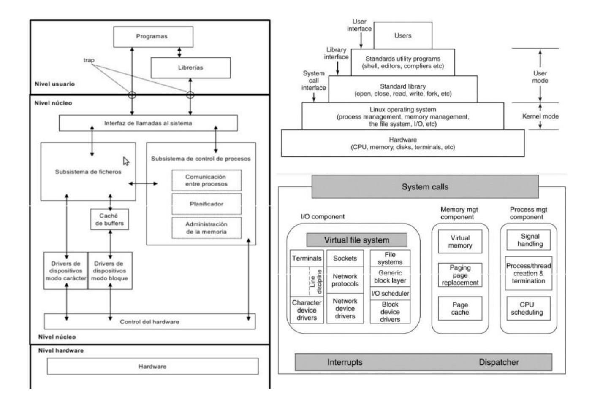
1.7 Cosas importantes de este Tema
La definición de Sistema Operativo.
Saberse el 1.4 perfectamente.
Entender los siguientes conceptos que en el Tanembaum explica por encima y no se terminan de entender (esta información la sacamos tras mandarle un correo al profesor):
- Trap: salto para ejecutar algún código del kernel del SO, esto incluye syscalls, interrupciones, excepciones, etc.
- Llamada al sistema: es producida por software (generada por algunas funciones en C o instrucciones en assembly como las del MIPs). Están definidas en las librerías, que pasan el nº de llamada al SO en modo kernel (por lo que son Traps) y se ejecutan en el kernel. Se puede pensar que son como una herramienta que permite al usuario acceder a instrucciones privilegiadas, prácticamente cualquier función de librería de C son syscalls (hay una lista en internet de todas ellas para el que se ralle con eso).
- Interrupciones: son producidas por hardware externo al procesador (Disco duro, puertos de E/S, etc.). Son asíncronos y se producen en cualquier momento, el controlador de interrupciones las espera pasivamente. Las interrupciones implican un Trap porque el dispositivo controlador que las recibe y la resolución de la interrupción es un Trap. Por si no queda claro, el trap no se produce cuando por ejemplo presionas una tecla del teclado, se produce cuando el SO gestiona esa interrupción.
- Excepción: se producen al intentar ejecutar una instrucción ilegal como una división por 0 o un fallo de página (más adelante se explica lo que es porque es muy importante). Una excepción es un Trap porque implica pasar a modo kernel. Además sabemos que al ocurrir un fallo de página se debe de traer una página del disco, lo además genera una interrupción cuya resolución implica otro Trap.